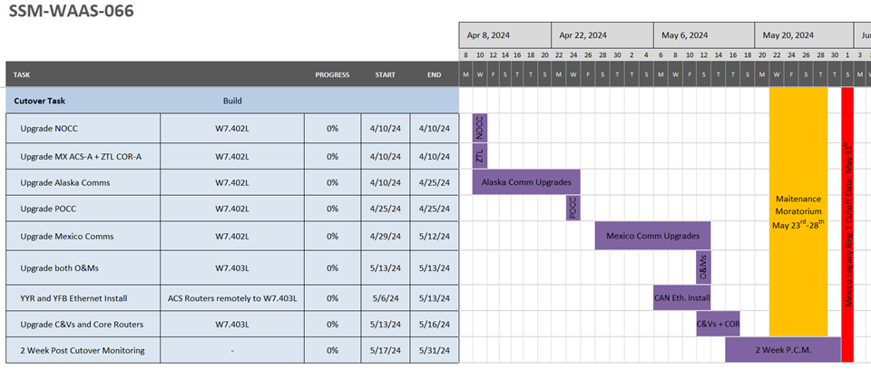
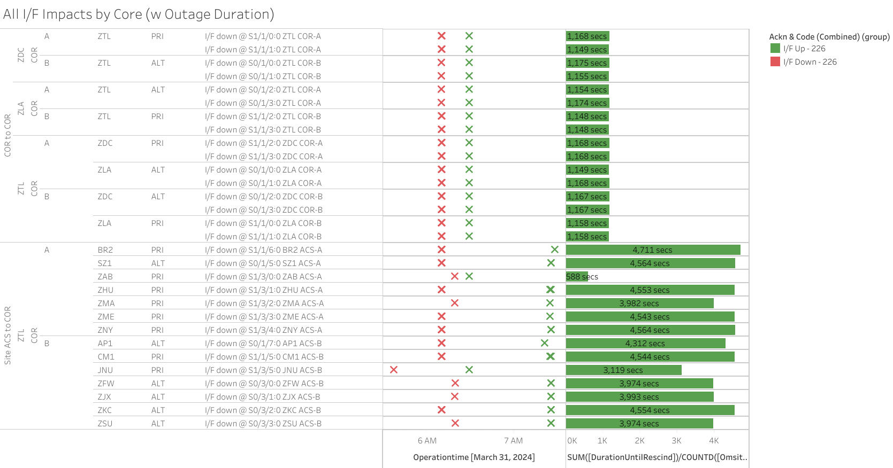

Weekly Highlights 20240327-20240403
SSM-WAAS-066 - CY24 Comm Upgrade
WAAS Engineering has released SSM-WAAS-066, and we are coordinating Cutover Start to begin the week of 4/8/2024. This SSM will accomplish the following:
- Remove the ZSE Comm Node from the WAAS Topology and upgrade Alaska WRS Comms
- Upgrade Ring 1 Mexico WRS-ZTL Comms (Ring 2 Mexico WRS-ZLA comms are not part of this modification)
- Upgrade O&Ms, C&Vs, and Core Routers to support comm changes

3/27 - MPR WRE-B Faulted
- 3/27 04:23 - MPR WRE-B Faulted with SEs 29, 52, 53, 59; after Control Power, the Freq Std failed to initialize and could not be restored; this Freq Std had an ongoing SE 30 Minor Alarm for months which we were running to failure; ref LIR 769976024; Control Powered and restored to Normal at 3/27 16:36
3/27 - BR2 GUS Maintenance
- 3/27 15:58 - BR2 GUS to Maintenance for
regular semi-annual RFU maintenance; ref LIR 743891824; restored to Backup at 3/27 18:56
3/28 - JNU WRE-A Power Outage
- 3/21 14:22 - JNU WRE-A to No Data Reported --
local tech (MP) suspects due to bad PCU-A WRE-A, investigating issue; ref LIR 44113221 - 3/27 23:35 - JNU WRE-A returns to Maintenance but fails initialization; cycling in Maintenance...
- 3/28 22:02 - JNU Ring 1 PRI comms flapping; last event cleared at 3/28 22:14 (~540 seconds total)
- 3/28 22:23 - JNU WRE-A returns to Maintenance
after PCU replaced; ref LAD
770204024; restored to Normal
at 3/28 23:00
- JNU WRE-A - 3/21/24-3/28/24 - No power to cabinet
3/29 - ZME WRE-C Fault (Freq Std Ionizer)
- 3/29 11:13 - ZME WRE-C Faulted with SEs 53 and 59; changed to Maintenance and restored to Normal at 3/29 11:19
- 4/3 19:19 - ZME WRE-C to Maintenance and Control Powered to clear F3 Ionizer Fault on the Freq Std (occurred on 3/29 Fault); ref LCM 44129021; restored to Normal at 4/3 19:46
3/30 - ZLC WRE-B Fault
- 3/30 01:52 - ZLC WRE-B Faulted with SEs 29, 52, 53, 59; changed to Maintenance and restored to Normal at 3/30 02:58
3/31 - ZTL Comm Event (MR-163437B)
- 3/31 06:09 - ZTL both Core Routers impacted for
MR-163437B - L3Harris tech's will be onsite to Hot Cut services; COR-COR lines cleared at 3/31 06:28 (~1168 seconds); Last WRS lines cleared at 3/31 07:25 (~4543 seconds); ref LAD 766041924

4/2 - AP1 GUS Receiver Replacement
- 4/2 07:01 - GUS Switchover - G30
- BR2 to Primary / AP1 to Backup
to replace the GUS-T receiver; ref LAD 773956824-
Reasoning: On 3/30 GEO 135 went NM for several minutes. That event seems correlated to carrierphase divergences, similar to what we had seen from CM1 in November 2023/ January 2024. From analysis from NASE and Leidos, this stems from a component at AP1, and there have been carrierphase divergences for at least a few weeks. We want to start with replacing the receiver and see if that improves.
-
- 4/2 16:49 - BIL Ring 1 / Ring 2 comms down hard due to telco outage; ref LAD 774056524; all lines cleared at 4/3 00:32 (~27770 seconds)
- 4/2 20:00 - AP1 GUS to Maintenance for GUS Receiver Replacement; restored to Backup at 4/2 21:22
4/3 - BET Freq Std Replaced
- 3/19 19:23 - BET WRE-B returned to Maintenance for
Freq Std Replacement; currently cycling in
Maintenance Mode; ref LIR
757800424
The tech replaced Freq Std and recycle the power w/o configuration, not sure if it has been configured or not, because he had to leave right away for some other urgent task. He is going to come back tomorrow to continue the mission. WAAS OPS is monitoring the equipment status.
- 4/2 22:14 - BET WRE-B returns to Maintenance for
Freq Std Replacement; ref LAD
757800424; restored to Normal
at 4/2 23:47
- BET WRE-B - 3/4/24-4/3/24 - Freq Std Failure
4/3 - MSD WRE-C Fault (Rcvr Comm Fault)
- 4/3 19:56 - MSD WRE-C Faulted with SE 54 Rcvr Comm Fault; SE 308 Process Failure indicates SW restart without Operator Action; ref LAD 774844324; restored to Normal at 4/3 21:01
Various Comm Impacts
* Does not include single-line impacts <60 seconds which do not cause an outage
Other Sites
- 3/27 04:57 - BRW Ring 1 / Ring 2 comms down hard for ~95 seconds
- 4/1 17:34 - ZSU Ring 1 PRI / Ring 2 ALT comms took a ~55 second hit; site went No Data Reported since the remaining comms have been down since 3/24 14:05...
- 4/1 22:03 - AP1 Ring 1 PRI / Ring 2 ALT comms took a ~30 second hit
- 4/2 03:01 - AP1 Ring 1 PRI / Ring 2 ALT comms took a ~90 second hit
YYR Comm Events
- 3/17 21:17 - YYR Ring 2 comms down hard; ref LIR 765571924; Ongoing...
Mexico Ring 1 Down to MMD, MMX, MTP
- 3/14 23:20 - MMD, MMX, MTP
Ring 1 down hard --
MTP
/ MMD OFFLINE; MMX has
partial
RG1 on Ring 1 and
is flapping to No Data
Reported; ref
LIR
764089024 --
Elevated to Level 2. Fires have damaged lines. Local TELCO addressing issues. - 3/20 13:07 - MSD Ring 1 comms took a ~119 second hit
- 3/20 13:09 - MMX and MTP Ring 1 comms inserted loopbacks; last loopback cleared at 3/20 13:16 (~272 seconds)
- 3/20 17:52 - MTP Ring 1 comms inserted loopbacks...
ZSU Comm Events
- 3/21 13:25 - ZSU Ring 1 PRI / Ring 2 ALT comms flapping; last event cleared at 3/21 13:34 (~187 seconds)
- 3/24 14:05 - ZSU Ring 1 ALT / Ring 2
PRI comms down hard;
ISR 0324-0351; ref LIR 44115721...
List of current offline WREs
List of current offline WREs -- ref WAAS Status Monitor
- MMX WRE-C manually Shutdown to stop loudmouth Sig Events during Ring 1 comm outage...
All Depot shipments to Mexico are halted until the customs process can be finalized
- MMX WRE-B - 10/2-... - PCU-B failed; need replacement but first need Maintainer Laptops for configuration
- MMX WRE-A - 9/27-... - PCU-A failed; need replacement but first need Maintainer Laptops for configuration
- MTP WRE-B - 7/21-... - PCU-B failing over and over again; input power tested good; disconnected power for other LRUs in WRE-B until PCU-B can be replaced; PCU-B has apparently been stable since 7/25 00:16 (no further power cycles on PCU)
5/11/23-... - MX Ring 2 Satcom Upgrade
MX WAAS Sites comm upgrades in progress:
- 2/15 - MMX Ring 2 successfully connected through Tijuana to ZLA COR-B!
- 11/2 - FTI has initiated coordination with Tijuana to install and test direct connection to Frequentis -- MMD Test on 12/6
- 10/27 - Frequentis has delivered to Tijuana, needs to be connected to FTI delivery
Further work / new cables needed at each WRS site to complete Ring 2 connection upgrades
FTI-Harris coordinating with SENEAM at TJX to complete end-to-end testing

Major Events


Comm Events